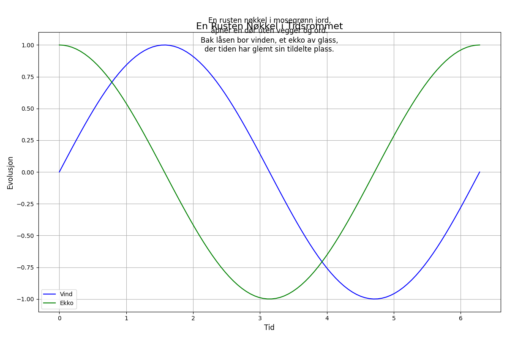

En rusten nøkkel i mosegrønn jord, åpner en dør uten vegger og ord. Bak låsen bor vinden, et ekko av glass, der tiden har glemt sin tildelte plass.

import matplotlib.pyplot as plt
import numpy as np
# Dikt
dikt = """
En rusten nøkkel i mosegrønn jord,
åpner en dør uten vegger og ord.
Bak låsen bor vinden, et ekko av glass,
der tiden har glemt sin tildelte plass.
"""
# Definer parametere for visualisering
x = np.linspace(0, 2 * np.pi, 100)
y1 = np.sin(x)
y2 = np.cos(x)
# Figur og akser
fig, ax = plt.subplots(figsize=(12, 8))
# Plot vind og ekko
ax.plot(x, y1, label='Vind', color='blue')
ax.plot(x, y2, label='Ekko', color='green')
# Legg til tekst
ax.text(0.5, 0.9, dikt, ha='center', fontsize=12, transform=ax.transAxes)
# Legg til tittel og etiketter
ax.set_title('En Rusten Nøkkel i Tidsrommet', fontsize=16)
ax.set_xlabel('Tid', fontsize=12)
ax.set_ylabel('Evolusjon', fontsize=12)
# Legg til grid og legender
ax.grid(True)
ax.legend(fontsize=10)
# Juster layout
plt.tight_layout()
# Lagre figuren
plt.savefig(output_path)execution_ok=True fallback_used=False image_ok=True